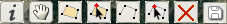
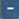
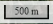
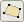
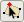
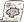

This interface contains a base map, map controls, and a tool bar. In default, the base map shows high resolution satellite imagery of the focus area. You can play with the map to situate yourself in this area and recall your sightings of wildlife. The tool bar  is mainly for you to draw polygons that indicate where the wildlife was sighted, as well as to draw your activity routes in this area.
As you can see, the map is the big part of this interface. Geting familiar with basic map interaction first would help to promote your productivity.
You can zoom in or zoom out by using and  on the up left corner. Zoom in or out can be achieved by your mouse wheel too.
Pan or move the map is quite straightforward. You can hold the left mouse button down and drag to move the map. Or, you can activate the pan control on the tool bar on the right top corner. If the pan control is activated, the icon would change to
Layer swither control at the lower part of up right corner is for you to switch the satellite imagery map to a topographic map, or a hybrid one which has roads and labels overlayed on top of the satellite imagery. The topographic map presents the focus area in 3D which might be more intuitive to give you an impression of the terrain conditons. We highly recommend you to use satellite imagery and 3D topographic map, in combination, in the following data contributing processes.
A scale bar  at the bottom right corner indicates the scale of the current map view.
Your sightings of wildlife will be recorded as sighting polygons indicating the approximate spatial location where sighted wildlife presented. You can start drawing such polygons by activating the draw sighting polygon control  on the tool bar. Once it is active , you can draw polygons on top of the map.
If it is the first polygon or route you are drawing, a prompt will come out asking you for some basic information that is needed for associating the data record with you. Your provision of such information is preferred but on a voluntary basis.
Please keep in mind that these polygons represent the extent of spatial locaton where the wildlife presented. Therefore you should spatially locate polygons as precise as possible. After finishing the sketch of a polygon, you will be prompted for details on this record of wildlife sighting, such as the sighting date, number of wildlife.
A drawn polygon can be modified with the modify sighting polygons control  on the tool bar. Once it is activited , you can edit the vertices of the polygon. You can also delete a drawn polygon with delete polygon or route control activated .
Acitivity routes are the routes you took in the focus area both on which you sighted wildlife and on which you did not sight any wildlife. An activity route can be drawn in a similar way with drawing a sighting polygon. Use draw activity route control on the tool bar to sketch an activity route. Use modify activity route control to modify the sketch of an activity route. Use delete polygon or route control to delete an activity route.
You might noticed that we have not talked about one button on the tool bar. Yes, you are right! We save that button to make a map based on your citizen observations. After you finish drawing sighting polygons and activity routes, hit that button  on the tool bar to predict a habitat suitability map using the data you just contributed. Isn't it so cool?